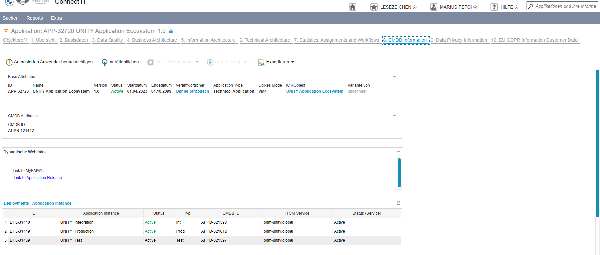
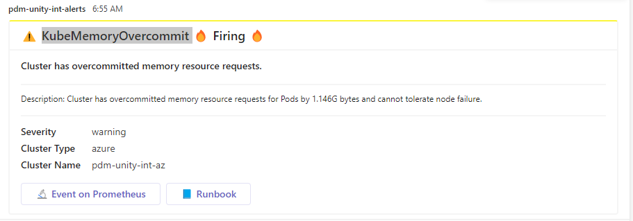

Table of Contents
Incident Recovery
The sections below describe certain incidents and how to recover from them.
Fix Broken Service Account Token
It may happen that the service account token stored in GHE secrets gets invalid or the user deletes it by accident.
This can be fixed by running the recreate-app-service-account workflow, which recreates the token on the k8s cluster and stores it in the GHE secrets for the selected environment and repos matching the specified regular expression.
Fix Missing or Broken Master Key
To encrypt the secrets in an automated way, the master key must be stored in GHE.
This (or fixing a broken master key) can be achieved by running the sync-master-keys-from-k8s-to-gh workflow, which stores the master key in GHE for the selected environment and repos matching the specified regular expression as CRYPT_MASTER_KEY (or updates the existing one if overwrite is set to true).
Fix Crashing UNITY Operator
In case, the UNITY operator is in a crashing looping state, because one app is configured such that it breaks the operator (which should not happen). To make sure the UNITY operator gets into normal state, one can exclude an app (causing the issue) from being handled by the unity-operator.
To do so, annotate the app’s secret with unity-operator.unity.bmwgroup.net/disabled: 'true'. This can be done by running
kubectl annotate secret app-foo --overwrite unity-operator.unity.bmwgroup.net/disabled=true
⚠️ After the root cause of the issue was solved, the annotation must be set back to false manually.
Automatic Alerts
There are several automatic alerts which result in both Teams messages on the configured channels and ITSM incidents being created. The situations which result in automatic alerts are the following:
-
when one of the platform components is not working on either INT or PROD (unity-operator, oauth2-proxy, grafana, grafana-tempo). In this case, the UNITY team needs to analyze the problem and come up with a solution (a quick temporary fix to bring the component back into a running state and, if necessary, a follow-up fix in the code to prevent the problem from occurring again)
-
when an application is not working on PROD. In this case, the UNITY team needs to analyze the problem and determine if it is caused by the platform or by the application. In case the problem is caused by the platform, the same steps which are done in case platform components are done, need to be followed here. In case the problem is within the application, it needs to be informed (via an incident).
The service group corresponding to an application can be found in Connect IT, under the tab CMDB Information (after searching for the application, by application ID)

Known Issues
The following alert is triggered because the total memory limit is higher than the available memory in the cluster.

This is not be a problem unless the applications are simultaneously requesting more memory than the property set in container.resources.requests in their unity-app.*.yaml, which is highly unlikely (for more information see the official documentation).
If this still happens, the problem can be fixed by raising the container.resources.requests to a value which is closer to the container.resources.limits, which should trigger the creation of new nodes by the autoscaler.